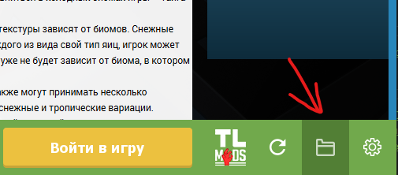

Моды сервера для Fabric 1.21.4
Скачать
Моды сервера для Forge 1.21.4
Скачать
Моды не обязательны, но они сделают геймплей интереснее. В архиве находится Plasmo Voice для войса и Emotecraft для емоций. Вам нужно разархивировать архив, моды которые вы получите закинуть в папку "mods", которая находиться в коренной папке Minecraft. Должно получиться так: AppData\Roaming\.minecraft\mods.
Если у вас Tlauncher то нажимаете на кнопку как на скрине и попадает в корневую папку Minecraft:
